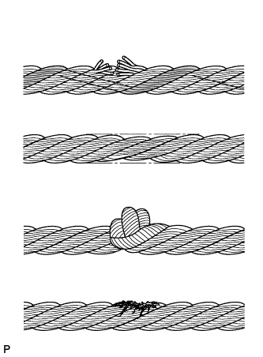
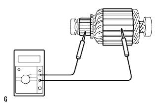
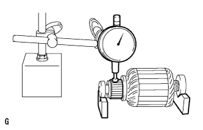
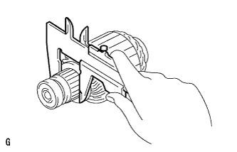
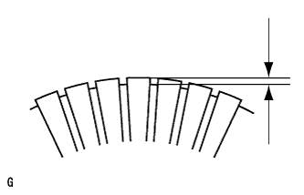
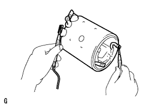
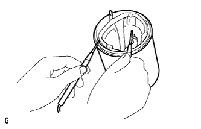
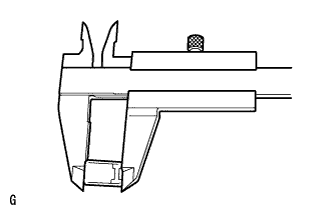
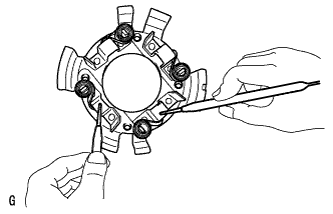
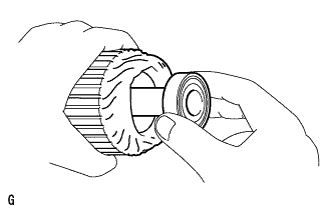

WINCH UNIT > INSPECTION |
| 1. INSPECT WINCH WIRE |
 |
Inspect the wire for the following damage: 1) areas where several strands are severed; 2) areas where the diameter is less than 7.5 mm (0.295 in.); 3) kinks; 4) corrosion; and 5) fraying.
If the wire is damaged, replace it with a new one.
| 2. INSPECT WINCH MOTOR ARMATURE SUB-ASSEMBLY |
Inspect the commutator for a shot circuit.
 |
Measure the resistance according to the value(s) in the table below.
| Tester Connection | Condition | Specified Condition |
| Commutator - Armature core | Always | 10 kΩ or higher |
 |
Using a dial indicator, measure the circle runout of the commutator.
 |
Using a vernier caliper, measure the diameter of the commutator.
 |
Check that the undercut depth is clean and free of foreign particles. Then smooth off the edge and measure the undercut depth.
| 3. INSPECT WINCH MOTOR YOKE SUB-ASSEMBLY |
Inspect for an open circuit.
 |
Measure the resistance according to the value(s) in the table below.
| Tester Connection | Condition | Specified Condition |
| Lead wire - Field coil brush lead | Always | 10 kΩ or higher |
Inspect the shunt coil for an open circuit.
 |
Measure the resistance according to the value(s) in the table below.
| Tester Connection | Condition | Specified Condition |
| Field coil brush lead - Field frame | Always | Below 1 Ω |
| 4. INSPECT WINCH MOTOR BRUSH |
 |
Using a vernier caliper, measure the length of the brush.
| 5. INSPECT WINCH MOTOR BRUSH SPRING |
 |
Using a pull scale, measure the installed load of the brush spring.
| 6. INSPECT WINCH MOTOR BRUSH HOLDER ASSEMBLY |
Inspect for an open circuit.
 |
Measure the resistance according to the value(s) in the table below.
| Tester Connection | Condition | Specified Condition |
| Positive (+) brush holder - Negative (-) brush holder | Always | Below 1 Ω |
| 7. INSPECT NO. 1 WINCH MOTOR ARMATURE BEARING |
 |
Turn each bearing by hand while applying inward force.
If the bearing sticks or resists, replace it.